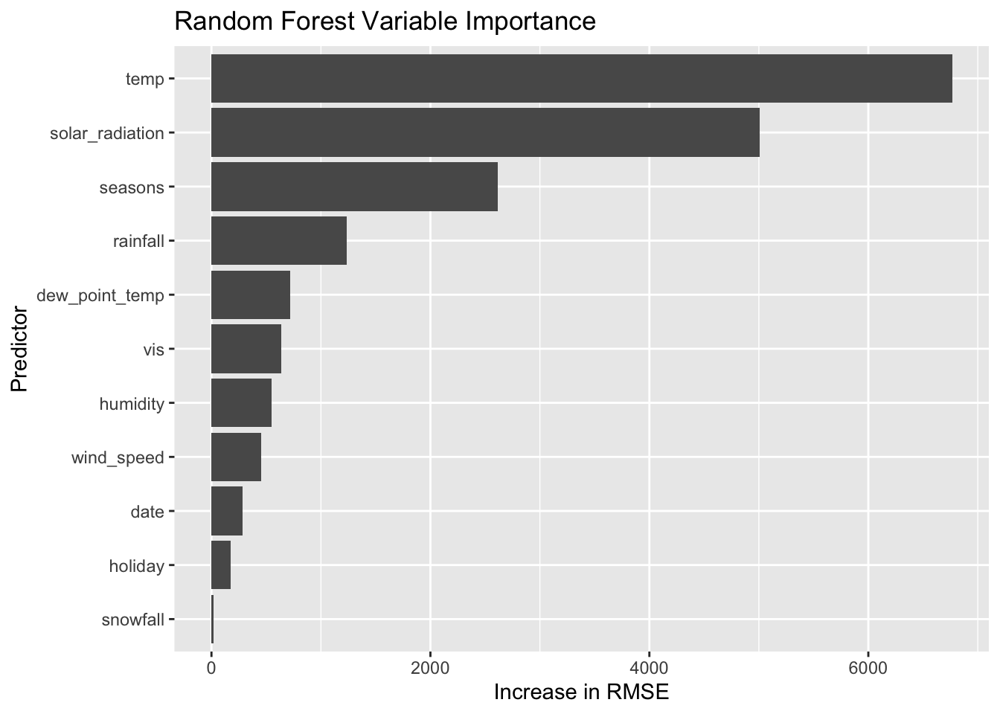

Attaching package: 'rpart'
The following object is masked from 'package:dials':
prune
library(rpart.plot)library(baguette)library(ranger)library(ggplot2)# ==========================================# READ AND CLEAN DATA# ==========================================bike_data <-read_csv("https://www4.stat.ncsu.edu/~online/datasets/SeoulBikeData.csv",locale =locale(encoding ="latin1"))
Rows: 8760 Columns: 14
── Column specification ────────────────────────────────────────────────────────
Delimiter: ","
chr (4): Date, Seasons, Holiday, Functioning Day
dbl (10): Rented Bike Count, Hour, Temperature(°C), Humidity(%), Wind speed ...
ℹ Use `spec()` to retrieve the full column specification for this data.
ℹ Specify the column types or set `show_col_types = FALSE` to quiet this message.
`summarise()` has regrouped the output.
ℹ Summaries were computed grouped by date, seasons, and holiday.
ℹ Output is grouped by date and seasons.
ℹ Use `summarise(.groups = "drop_last")` to silence this message.
ℹ Use `summarise(.by = c(date, seasons, holiday))` for per-operation grouping
(`?dplyr::dplyr_by`) instead.
# View cleaned databike_data
# A tibble: 353 × 12
date seasons holiday bike_count temp humidity wind_speed vis
<date> <fct> <fct> <dbl> <dbl> <dbl> <dbl> <dbl>
1 2017-12-01 Winter No Holiday 9539 -2.45 45.9 1.54 1871.
2 2017-12-02 Winter No Holiday 8523 1.33 62.0 1.71 1471.
3 2017-12-03 Winter No Holiday 7222 4.88 81.5 1.61 456.
4 2017-12-04 Winter No Holiday 8729 -0.304 52.5 3.45 1363.
5 2017-12-05 Winter No Holiday 8307 -4.46 36.4 1.11 1959.
6 2017-12-06 Winter No Holiday 6669 0.0458 70.8 0.696 1187.
7 2017-12-07 Winter No Holiday 8549 1.09 67.5 1.69 949.
8 2017-12-08 Winter No Holiday 8032 -3.82 41.8 1.85 1872.
9 2017-12-09 Winter No Holiday 7233 -0.846 46 1.08 1861.
10 2017-12-10 Winter No Holiday 3453 1.19 69.7 2.00 1043.
# ℹ 343 more rows
# ℹ 4 more variables: dew_point_temp <dbl>, solar_radiation <dbl>,
# rainfall <dbl>, snowfall <dbl>
# Summary statistics by season and holidaybike_data |>group_by(seasons, holiday) |>summarize(across( bike_count,.fns =c(mean = mean,median = median,sd = sd,IQR = IQR,min = min,max = max ),.names ="{.col}_{.fn}" ) )
`summarise()` has regrouped the output.
ℹ Summaries were computed grouped by seasons and holiday.
ℹ Output is grouped by seasons.
ℹ Use `summarise(.groups = "drop_last")` to silence this message.
ℹ Use `summarise(.by = c(seasons, holiday))` for per-operation grouping
(`?dplyr::dplyr_by`) instead.
# A tibble: 3 × 7
.metric .estimator mean n std_err .config model
<chr> <chr> <dbl> <int> <dbl> <chr> <chr>
1 rmse standard 3096. 10 258. pre0_mod0_post0 Model 3
2 rmse standard 3118. 10 263. pre0_mod0_post0 Model 2
3 rmse standard 4197. 10 141. pre0_mod0_post0 Model 1
Based on the 10-fold cross-validation results, Model 3 performed the best with the lowest RMSE of 3096.405 and MAE of 2320.155. This suggests that including the interaction and quadratic terms improves predictive performance compared with the simpler models. Model 3 was selected as the best multiple linear regression model.
Fit the Best MLR Model using last_fit()
# Final MLR Model: Model 3# Select the MLR model with the lowest CV RMSEbest_mlr_name <- mlr_results |>filter(.metric =="rmse") |>slice_min(mean, n =1) |>pull(model)mlr_workflows <-list("Model 1"= wf1,"Model 2"= wf2,"Model 3"= wf3)best_mlr_wf <- mlr_workflows[[best_mlr_name]]# View full regression summaryfinal_mlr <-last_fit( best_mlr_wf,split = bike_split,metrics =metric_set(rmse, mae))# Display test metricscollect_metrics(final_mlr)
# A tibble: 2 × 4
.metric .estimator .estimate .config
<chr> <chr> <dbl> <chr>
1 rmse standard 3059. pre0_mod0_post0
2 mae standard 2132. pre0_mod0_post0
The final model (model 3) achieved a test RMSE of 3059.349 and MAE of 2132.168. The training R-squared was 0.9231, indicating a strong fit of the training data.
# Finalize workflow with best parametersfinal_tree_wf <-finalize_workflow( tree_wf, best_tree)# Fit final tree on entire training setfinal_tree_fit <-fit( final_tree_wf,data = bike_train)# Plot final regression treefinal_tree_fit |>extract_fit_engine() |>rpart.plot()
Warning: Cannot retrieve the data used to build the model (so cannot determine roundint and is.binary for the variables).
To silence this warning:
Call rpart.plot with roundint=FALSE,
or rebuild the rpart model with model=TRUE.
Warning: labs do not fit even at cex 0.15, there may be some overplotting
# Finalize workflowfinal_bag_wf <-finalize_workflow( bag_wf, best_bag)# Fit best bagged tree on entire training setfinal_bag_fit <-fit( final_bag_wf,data = bike_train)
The bagged tree model was tuned using 10-fold cross-validation. The best tuning parameters were a cost complexity of 3.162278e-06, tree depth of 15, and minimum node size of 2. The selected model was then fitted to the entire training dataset. Its predictive performance will be evaluated on the test set and compared with the other models.
# A tibble: 24 × 9
mtry trees min_n .metric .estimator mean n std_err .config
<int> <int> <int> <chr> <chr> <dbl> <int> <dbl> <chr>
1 3 100 2 mae standard 2609. 10 119. pre0_mod01_post0
2 3 100 2 rmse standard 3246. 10 158. pre0_mod01_post0
3 3 100 10 mae standard 2775. 10 120. pre0_mod02_post0
4 3 100 10 rmse standard 3391. 10 158. pre0_mod02_post0
5 3 300 2 mae standard 2614. 10 119. pre0_mod03_post0
6 3 300 2 rmse standard 3244. 10 169. pre0_mod03_post0
7 3 300 10 mae standard 2712. 10 122. pre0_mod04_post0
8 3 300 10 rmse standard 3353. 10 154. pre0_mod04_post0
9 6 100 2 mae standard 2462. 10 108. pre0_mod05_post0
10 6 100 2 rmse standard 3040. 10 146. pre0_mod05_post0
# ℹ 14 more rows
# Select best random forest based on RMSEbest_rf <-select_best( rf_tune,metric ="rmse")best_rf
# A tibble: 1 × 4
mtry trees min_n .config
<int> <int> <int> <chr>
1 9 300 2 pre0_mod11_post0
# Finalize workflowfinal_rf_wf <-finalize_workflow( rf_wf, best_rf)# Fit best random forest on training datafinal_rf_fit <-fit( final_rf_wf,data = bike_train)
The random forest model was tuned using 10-fold cross-validation to select the best combination of mtry, trees, and min_n. The optimal parameters were mtry = 9, trees = 100, and min_n = 10, based on the lowest cross-validation RMSE.
The selected random forest was then fitted to the entire training dataset. Its predictive performance will be compared with the MLR, regression tree, and bagged tree models using test-set RMSE and MAE.
# A tibble: 4 × 3
model rmse mae
<chr> <dbl> <dbl>
1 Random Forest 2351. 1893.
2 Bagged Tree 2488. 1992.
3 MLR 3059. 2132.
4 Regression Tree 3421. 2659.
Final Model Comparison
The four models were evaluated on the test set using RMSE and MAE. The random forest performed best, with the lowest RMSE (2355.426) and MAE (1901.194), followed by the bagged tree, MLR, and regression tree. Overall, the ensemble tree methods outperformed the individual models, suggesting that combining multiple trees improves predictive accuracy for this dataset. The random forest was selected as the best overall model.
# Plot random forest importanceggplot( rf_importance,aes(x =reorder(variable, importance), y = importance)) +geom_col() +coord_flip() +labs(title ="Random Forest Variable Importance",x ="Predictor",y ="Increase in RMSE" )

Variable Importance
The variable importance plots show that temperature and solar radiation are the most influential predictors for both the bagged tree and random forest models, followed by season and rainfall. Permuting these variables resulted in larger increases in RMSE, suggesting that they contribute substantially to predictive accuracy. Snowfall and holiday status had relatively low importance in both models.
Fit Overall Best Model to Full Dataset
overall_best_fit <-fit( final_rf_wf,data = bike_data)# Display final fitted modeloverall_best_fit
# Extract fitted random forest engineoverall_best_fit |>extract_fit_engine()
Ranger result
Call:
ranger::ranger(x = maybe_data_frame(x), y = y, mtry = min_cols(~9L, x), num.trees = ~300L, min.node.size = min_rows(~2L, x), importance = ~"permutation", num.threads = 1, verbose = FALSE, seed = sample.int(10^5, 1))
Type: Regression
Number of trees: 300
Sample size: 353
Number of independent variables: 13
Mtry: 9
Target node size: 2
Variable importance mode: permutation
Splitrule: variance
OOB prediction error (MSE): 7381428
R squared (OOB): 0.9252493
Conclusion
Four models were evaluated using test-set RMSE and MAE: multiple linear regression, regression tree, bagged tree, and random forest. The random forest achieved the lowest prediction errors in the current analysis, followed by the bagged tree, MLR, and regression tree. These findings suggest that ensemble tree methods performed better for predicting daily bike rentals in this dataset.
The random forest was selected as the overall best model based on its test-set RMSE of 2355.426 and MAE of 1901.194. The selected model was refitted using all 353 observations, with 300 trees, an mtry of 9, and a minimum node size of 2. The final model achieved an out-of-bag R-squared of approximately 0.9252, indicating strong predictive performance.